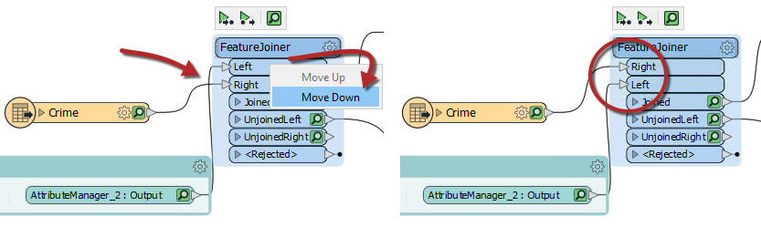
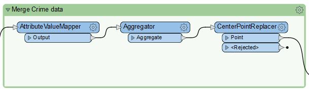
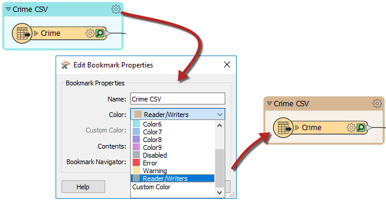
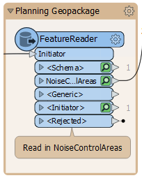
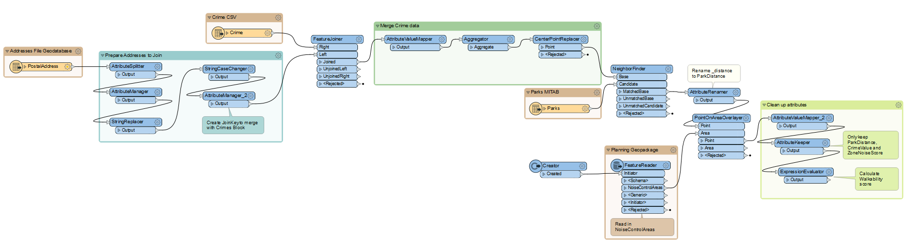

Learning Objectives
After completing this lesson, you’ll be able to:
- Rearrange transformers into a logical layout that groups those carrying out a single task.
- Use annotations to clarify the processes taking place in a workspace.
- Use bookmarks to turn a single workspace into defined sections.
- Avoid poor design choices like overlapping connections.
Resources
Unit Content
You have been assigned to a project to calculate the "walkability" of each address in the city of Vancouver.
Your colleague wasn't aware of FME style best practices when they gave us the workspace, which made working with it a bit challenging. We need to present our workspace, so we want it to look neat, organized, and well-documented.
1) Start Workbench
Start FME Workbench (2022.0 or later) and open the starting workspace.
2) Examine Workspace
The workspace is pretty unorganized. Let’s examine it in sections to figure out how it works.

- PostalAddress and PostcodeBoundaries read from Addresses.gdb.
- Transformers clean up attributes from the PostalAddress feature type to create a separate Number and Street attribute. Then the last two digits of the Number are being replaced by XX to create an attribute that will be the Join Key for joining the crime data.
- Crime reads from Crime.csv. This dataset stores the street number for each crime incident with XX as the last two digits to protect anonymity.
- The FeatureJoiner joins PostalAddress and the Crime data based on the Join Key attribute from section two and the Block attribute from Crime.
- These transformers give the crime Type attribute a number based on severity and then calculate the total CrimeValue for each address block. Then the CenterPointReplacer extracts only one point if there are multiple crime incidents in the same location.
- The workspace reads the Parks MapInfo TAB file. It will use this data to measure the walking distance from addresses to parks.
- The NeighborFinder determines the park closest to each address.
- The AttributeRenamer renames the _distance attribute from the NeighborFinder to ParkDistance.
- The Creator and the FeatureReader read a Planning Restrictions OGC Geopackage, including noise restriction areas from the NoiseControlAreas layer.
- The PointOnAreaOverlayer joins the point data containing the crime, distance to park, and addresses with the NoiseControlAreas polygons. This joined data assigns the noise restrictions to any overlapping points. The AttributeValueMapper is used to assign the zone with a score, creating the attribute NoiseZoneScore. This new attribute will reflect that addresses in noise-restricted areas are more walkable.
Firstly, let's clean up the transformers. Move the transformers around so that there are no overlapping connections.
For the FeatureJoiner, you could move the Crime reader below the Prepare Addresses to Join bookmark, or you can reorder the FeatureJoiner ports. Right-click on the Left input port, and select Move Down. Now the two connection lines are not crossing:

Move the transformers into a logical order and add a bookmark around any logical groupings:

Don't forget to expand the Prepare Addresses to Join bookmark by clicking the right-pointing arrow in the bookmark’s top-left corner and organize those transformers:

4) Add Style
Having rearranged the transformers and added bookmarks we can now add annotations and color to highlight what is going on. This step will require some inspection of the transformers to find out what they are doing as well as inspecting the readers to know which format they are in:

Adding good annotation where necessary will help determine what is going on in the workspace.
By adding a bookmark around a reader or writer and then setting the color to the preset Readers/Writers color, it is quick to see at a glance where your readers or writers are:

You can also do this with FeatureReaders and FeatureWriters:

Your final workspace should look something like this:

5) Run Workspace
Collapse all the bookmarks if you wish and run the workspace once more to ensure all the caches are fresh. It might be a good idea to re-run the entire workspace.
6) Save the Workspace
You can choose to save this workspace as a regular workspace or as a template workspace.